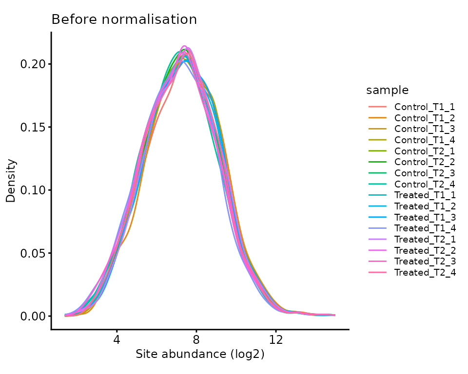
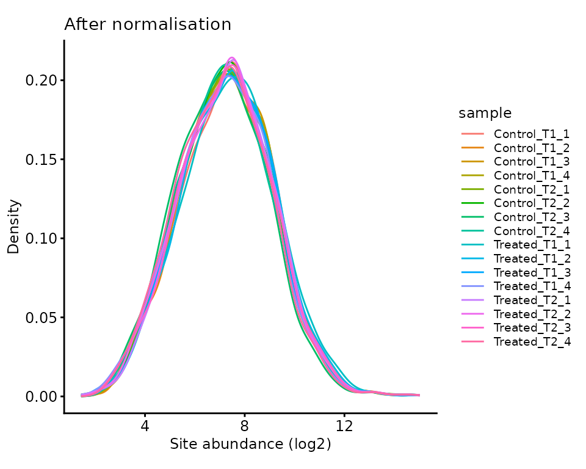
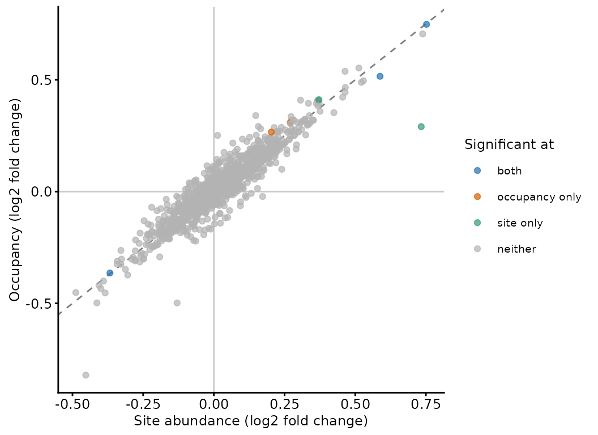

PTM designs: site-level quantification and normalisation
Tom Smith
2026-09-11
Source:vignettes/PTM_site_quantification.Rmd
PTM_site_quantification.RmdA post-translational modification (PTM) experiment asks a different question from a whole-proteome one. The quantity of interest is not how much of a protein there is, but how much of it carries a modification at a particular residue. Everything below follows from that difference.
Because modified peptides are a small fraction of the peptides in a digest, they have to be enriched before they can be quantified with any depth. A common design is to TMT label every sample once, pool the labelled material, and then split the pool: one part is enriched for the modification, the other is left alone. The two parts are acquired as separate runs, giving two datasets over the same samples — an enriched one that reports modified peptides, and a total one that reports protein abundance.
The alternative is to enrich each sample separately and quantify label-free, and the reason not to is that the enrichment is the most variable step in the workflow. Recovery from an immobilised metal affinity or titanium dioxide column depends on binding capacity, wash stringency and elution, and none of those repeat exactly between preparations. Enriching separately imprints that variability on the samples individually, where nothing in the data distinguishes it from biology. Labelling first and pooling moves the enrichment downstream of the point at which the samples become one tube, so a single enrichment is applied to all of them and its idiosyncrasies land on every channel alike.
Two further things follow from pooling. Modified peptides sit low in the dynamic range and are identified less reproducibly than unmodified ones, so a label-free DDA experiment loses many sites to missing values in a subset of samples; within a plex, a site identified once is quantified in every channel from the same spectrum. And the total fraction is split from the pool after labelling, which is what later makes it usable as a normalisation reference: it is the same labelled material, so it carries the same loading differences as the enriched fraction.
The costs are the usual isobaric ones. The plex sets a ceiling on how many samples can share an enrichment, and a design that exceeds it needs bridge channels and the treatment in multi-plex TMT. Co-isolation compresses fold changes, which SPS MS3 (McAlister et al. 2014) and the filtering below limit, but cannot completely resolve. Label-free is a reasonable choice where the enrichment can be tightly controlled, and DIA acquisition answers the missing value argument, but neither recovers the shared enrichment.
With TMT-label, pool then enrich experiment design, there are three important considerations which we cover here:
- Which residue is modified matters, so the search engine’s localisation confidence has to be assessed and the site placed within the protein, not just within the peptide.
- The enriched fraction cannot be normalised against itself. A treatment that changes phosphorylation globally is the signal, and median-centring the enriched data would remove it. The total fraction supplies the reference instead.
- A site can change because its protein changed. Dividing the site out by its protein separates the two, and the answer is not always the same as the site abundance.
This vignette works through a phosphoproteomics experiment searched
with Proteome Discoverer (PD). The principles apply to any enriched PTM;
only the search-engine columns differ. MaxQuant’s equivalents are
filter_maxquant_ptm() and
add_filter_ptm_pos_rowdata_mq(), which take the same role
as parse_PTM_scores_pd() below.
Everything up to the localisation step is the routine PSM processing covered in TMT QC and summarisation, so it is run here with less commentary.
The experimental design
psm_tmt_phospho, psm_tmt_phospho_total and
tmt_phospho_design are datasets available from the
biomasslmb package, derived from a real TMTpro experiment
in mouse fibroblasts. A drug treatment is compared against a vehicle
control at two timepoints, with four replicates of each combination, all
labelled in a single plex. psm_tmt_phospho is the PD
PSM-level output for the phospho-enriched fraction and
psm_tmt_phospho_total for the matched total fraction, both
truncated to a subset of proteins for a manageable vignette.
knitr::kable(tmt_phospho_design)| Condition | Timepoint | Replicate | quantCols | |
|---|---|---|---|---|
| Control_T1_1 | Control | T1 | 1 | Control_T1_1 |
| Control_T1_2 | Control | T1 | 2 | Control_T1_2 |
| Control_T1_3 | Control | T1 | 3 | Control_T1_3 |
| Control_T1_4 | Control | T1 | 4 | Control_T1_4 |
| Control_T2_1 | Control | T2 | 1 | Control_T2_1 |
| Control_T2_2 | Control | T2 | 2 | Control_T2_2 |
| Control_T2_3 | Control | T2 | 3 | Control_T2_3 |
| Control_T2_4 | Control | T2 | 4 | Control_T2_4 |
| Treated_T1_1 | Treated | T1 | 1 | Treated_T1_1 |
| Treated_T1_2 | Treated | T1 | 2 | Treated_T1_2 |
| Treated_T1_3 | Treated | T1 | 3 | Treated_T1_3 |
| Treated_T1_4 | Treated | T1 | 4 | Treated_T1_4 |
| Treated_T2_1 | Treated | T2 | 1 | Treated_T2_1 |
| Treated_T2_2 | Treated | T2 | 2 | Treated_T2_2 |
| Treated_T2_3 | Treated | T2 | 3 | Treated_T2_3 |
| Treated_T2_4 | Treated | T2 | 4 | Treated_T2_4 |
The two fractions share this design, because they are two acquisitions of the same labelled pool. The TMT tag that carried a given sample is the same in both.
Defining the contaminant proteins
As for any experiment, we need the contaminant accessions to filter against. This search used the ‘0602_Universal Contaminants’ database (Frankenfield et al. 2022).
contaminant_fasta_inf <- system.file(
"extdata", "0602_Universal_Contaminants.fasta.gz",
package = "biomasslmb"
)
contaminant_accessions <- get_contaminant_fasta_accessions(contaminant_fasta_inf)
contaminant_accessions <- c(contaminant_accessions,
sub('^Cont_', '', contaminant_accessions))Read in and filter both fractions
The two fractions are read into separate QFeatures
objects. They cannot share one, because they hold different features:
modified peptides in one, all peptides in the other. Keeping them apart
also keeps it obvious which assay is which when they are combined at the
end.
The filtering applied here is the same for both, and follows the PSM-level processing in the TMT PSM QC and summarisation vignette: drop contaminants and PSMs without a unique master protein, then drop PSMs with high co-isolation, low signal:noise, or a search engine rank below 1.
read_and_filter <- function(infdf) {
qf <- readQFeatures(assayData = infdf,
colData = tmt_phospho_design,
name = 'psm_raw')
qf <- sync_coldata(qf, 'psm_raw')
# A more accurate average S:N ratio value than PD reports
qf[['psm_raw']] <- update_average_sn(qf[['psm_raw']])
qf[['psm_filtered']] <- filter_features_pd_dda(
qf[['psm_raw']],
contaminant_proteins = contaminant_accessions,
filter_contaminant = TRUE,
filter_associated_contaminant = TRUE,
unique_master = TRUE)
qf[['psm_quality']] <- filter_TMT_PSMs(
qf[['psm_filtered']], inter_thresh = 50, sn_thresh = 5)
filterFeatures(qf, ~ Rank == 1, i = 'psm_quality')
}
phospho <- read_and_filter(psm_tmt_phospho)
total <- read_and_filter(psm_tmt_phospho_total)Localising the modification
A search engine reports which peptide was identified and which
residues carry the modification, but the second of those is much less
certain than the first. A peptide with several serines and one phosphate
can often be explained about equally well by a phosphate on any of them:
the fragment ions that would distinguish the possibilities may not have
been observed. PD’s ptmRS node scores each candidate site, and
parse_PTM_scores_pd() reads those scores out of the
ptmRS.Best.Site.Probabilities column.
threshold sets the minimum score a site needs. If any
site on a peptide falls below it, the modifications on that peptide are
all discarded rather than partially kept — a peptide whose phosphate
could be on either of two residues tells you nothing about either.
phospho[['psm_localised']] <- parse_PTM_scores_pd(
phospho[['psm_quality']], threshold = 75)
#> Removed 0 Features where the ptm_col value == `Inconclusive data`
#> Total Features: 6757
#> Total detected PTMFeatures: 6554
#> Features passing filter: 5058
#> Features failing filter: 1496
#> BiPTM/multiPTM Features where some sites fail filter: 349
#> Total detected sites: 10398
#> Sites passing filter: 6701
#> Sites failing filter: 3697
#> monoPTM passing filter: 3619
#> biPTM passing filter: 1237
#> multiPTM passing filter: 202
#> Too many isoforms: 0The log distinguishes features from sites, which matters when
peptides carry more than one modification.
parse_PTM_scores_pd() annotates rather than filters,
writing empty values where nothing passed, so the failures still need
removing.
phospho[['psm_localised']] <- phospho[['psm_localised']][
grepl('Phospho', rowData(phospho[['psm_localised']])$ptms), ]
nrow(phospho[['psm_localised']])
#> [1] 5058A threshold of 75 is a common choice and is the one used here; 95 is stricter and is worth considering when the question rests on a single site. The cost is one-sided — raising it discards peptides, it does not add any — so the appropriate value depends on whether you would rather lose sites or believe some that are misplaced.
Placing sites within the protein
The positions reported so far are positions within the peptide. Two
PSMs of the same site reached by different missed cleavages will
disagree about it, and no two proteins can be compared on it.
add_ptm_positions() converts them to positions within the
protein by re-digesting the protein sequences and locating each
peptide.
That needs the sequences. In a real analysis you would fetch them for
your master proteins with make_fasta(); a FASTA covering
this dataset’s proteins is included with the package so that building
the vignette does not depend on UniProt being reachable.
proteome_fasta <- tempfile(fileext = '.fasta')
make_fasta(unique(rowData(phospho[['psm_localised']])$Master.Protein.Accessions),
file = proteome_fasta)
proteome_fasta <- system.file(
"extdata", "tmt_phospho_proteome.fasta.gz", package = "biomasslmb")
phospho[['psm_localised']] <- add_ptm_positions(
phospho[['psm_localised']],
proteome_fasta = proteome_fasta,
master_protein_col = 'Master.Protein.Accessions')This adds start and end for the peptide,
ptm_positions_prot for the sites within the protein, and
ptm_name, which combines residue and position into the
conventional form.
rowData(phospho[['psm_localised']]) %>%
data.frame() %>%
select(Sequence, Master.Protein.Accessions, ptm_positions,
start, ptm_positions_prot, ptm_name) %>%
head(4)
#> Sequence Master.Protein.Accessions ptm_positions start ptm_positions_prot
#> 2 SHSSSSSPSPSR Q8BTI8 9; 11 903 911; 913
#> 4 GDSDDGR Q9CYI0 3 53 55
#> 5 SASGSSSDR Q8BTI8 6; 7 2031 2036; 2037
#> 7 SDGAGGAR Q6ZQ58 1 302 302
#> ptm_name
#> 2 S911; S913
#> 4 S55
#> 5 S2036; S2037
#> 7 S302Two things stop a peptide from being placed. Its master protein may
have no sequence in the FASTA, which happens when an accession has been
withdrawn or merged since the search; and the peptide may occur at more
than one position in its protein, in which case start holds
several values and the site cannot be assigned to one of them. Neither
is common, and in a subset this size either count can come out at zero,
but both have to be checked for and removed: a site with no unambiguous
position cannot be summarised or compared.
site_positions <- rowData(phospho[['psm_localised']])
data.frame(
reason = c('No sequence for the master protein',
'Peptide occurs more than once in its protein',
'Placed'),
PSMs = c(sum(is.na(site_positions$start)),
sum(grepl(';', site_positions$start)),
sum(!is.na(site_positions$start) & !grepl(';', site_positions$start))))
#> reason PSMs
#> 1 No sequence for the master protein 2
#> 2 Peptide occurs more than once in its protein 0
#> 3 Placed 5056
phospho[['psm_sites']] <- phospho[['psm_localised']][
!is.na(site_positions$start) & !grepl(';', site_positions$start), ]Finally, the identifier the PSMs will be summarised over. A site is
only meaningful with its protein attached — S614 names a
residue in some protein, not a measurable thing — so the accession and
the site name are pasted together.
rowData(phospho[['psm_sites']])$site <- paste(
rowData(phospho[['psm_sites']])$Master.Protein.Accessions,
gsub(' ', '', rowData(phospho[['psm_sites']])$ptm_name),
sep = '_')
head(unique(rowData(phospho[['psm_sites']])$site))
#> [1] "Q8BTI8_S911;S913" "Q9CYI0_S55" "Q8BTI8_S2036;S2037"
#> [4] "Q6ZQ58_S302" "Q8BTI8_S1457;S1458" "Q8BTI8_S268;S270"Summarising to sites and proteins
With an identifier per fraction, both are summarised the same way as any TMT experiment: drop the PSMs with missing values, sum the rest, and log-transform. The enriched fraction is summarised over the site identifier, the total fraction over the master protein.
phospho[['psm_complete']] <- filterNA(phospho[['psm_sites']], 0)
total[['psm_complete']] <- filterNA(total[['psm_quality']], 0)
phospho <- aggregateFeatures(phospho, i = 'psm_complete', fcol = 'site',
name = 'site_raw', fun = base::colSums)
total <- aggregateFeatures(total, i = 'psm_complete',
fcol = 'Master.Protein.Accessions',
name = 'protein_raw', fun = base::colSums)
phospho[['site_raw']] <- logTransform(phospho[['site_raw']], base = 2)
total[['protein_raw']] <- logTransform(total[['protein_raw']], base = 2)
c(sites = nrow(phospho[['site_raw']]), proteins = nrow(total[['protein_raw']]))
#> sites proteins
#> 1348 419A peptide carrying two phosphates becomes one feature named for both, not two features of one site each, because that is what was measured: the quantification belongs to the doubly-modified form of that peptide, and there is no way to divide it between the two residues. Peptides carrying one of the sites alone, if they were observed, form their own separate feature.
table(sites_per_feature = lengths(
strsplit(rowData(phospho[['site_raw']])$ptm_name, '; ')))
#> sites_per_feature
#> 1 2 3 4
#> 994 287 65 2This means the same residue can appear in more than one feature, and that a feature’s abundance is not the abundance of any single site. Treating each feature as an independent observation of its residues would double-count them.
Normalising the enriched fraction
Unequal loading between channels has to be corrected in a PTM
experiment just as in any other. The usual correction — centring every
sample on a common median, as
QFeatures::normalize(method = 'diff.median') does — assumes
that most features are unchanged between samples. In the total fraction
that is reasonable. In the enriched fraction it is not: a treatment that
changes phosphorylation globally will shift the median of the enriched
data, and centring it away removes exactly the effect the experiment was
run to detect.
The total fraction gives the reference instead. It comes from the
same labelled pool, so it carries the same loading differences, and its
median is a legitimate estimate of them. get_medians()
extracts the per-sample medians, and
center_normalise_to_ref() applies them to whichever assay
you pass.
total_medians <- get_medians(total[['protein_raw']])
total[['protein']] <- center_normalise_to_ref(
total[['protein_raw']], total_medians, on_log_scale = TRUE)
phospho[['site']] <- center_normalise_to_ref(
phospho[['site_raw']], total_medians, on_log_scale = TRUE)center_normalise_to_ref() with the default
center_to_zero = FALSE subtracts each median only after the
medians have themselves been centred on their mean, so it applies the
relative differences between samples and leaves the overall
level of the data alone. That is why the same reference can be applied
to two assays on quite different scales.
plot_quant(phospho[['site_raw']], log2transform = FALSE, method = 'density') +
theme_biomasslmb(base_size = 9) +
theme(legend.key.height = unit(3, 'mm')) +
labs(x = 'Site abundance (log2)', title = 'Before normalisation')
plot_quant(phospho[['site']], log2transform = FALSE, method = 'density') +
theme_biomasslmb(base_size = 9) +
theme(legend.key.height = unit(3, 'mm')) +
labs(x = 'Site abundance (log2)', title = 'After normalisation')

Site-level abundance distributions, before and after normalisation
Site abundance and occupancy
A site’s abundance can change for two reasons: the fraction of the protein that is modified has changed, or the amount of the protein has changed. Only the first is a change in signalling; the second would show up just as well in the total fraction.
Subtracting the protein’s log abundance from the site’s separates them. The result is often called occupancy or stoichiometry, though neither name is quite right — an enrichment step does not preserve absolute proportions, so this is a relative measure, comparable between samples but not interpretable as “x% of the protein is modified”.
site_protein <- rowData(phospho[['site']])$Master.Protein.Accessions
has_protein <- site_protein %in% rownames(total[['protein']])
occupancy <- assay(phospho[['site']])[has_protein, ] -
assay(total[['protein']])[site_protein[has_protein], ]
c(sites = nrow(phospho[['site']]), with_a_protein_estimate = sum(has_protein))
#> sites with_a_protein_estimate
#> 1348 1321Not every site gets one. A protein can be quantified in the enriched fraction and not the total, which happens most for low-abundance proteins, where the enrichment is the only reason they were seen at all — so the sites that lose their protein estimate are not a random subset.
Testing
Both matrices can go into limma in the usual way. The
design here has a treatment and a timepoint, and the question is about
the treatment, so the timepoint enters as a blocking factor.
condition <- factor(phospho[['site']]$Condition,
levels = c('Control', 'Treated'))
timepoint <- factor(phospho[['site']]$Timepoint)
design <- model.matrix(~ timepoint + condition)
test_treatment <- function(quant) {
fit <- eBayes(lmFit(quant, design))
topTable(fit, coef = 'conditionTreated', number = Inf, sort.by = 'none')
}
site_res <- test_treatment(assay(phospho[['site']]))
protein_res <- test_treatment(assay(total[['protein']]))
occupancy_res <- test_treatment(occupancy)
data.frame(
level = c('Site abundance', 'Occupancy'),
tested = c(nrow(site_res), nrow(occupancy_res)),
significant = c(sum(site_res$adj.P.Val < 0.05),
sum(occupancy_res$adj.P.Val < 0.05)))
#> level tested significant
#> 1 Site abundance 1348 6
#> 2 Occupancy 1321 6Those are the two answers you might report. The protein-level test is not a third one — it is a different question over a different set of features — but it is what tells you how far to trust the agreement between these two. Only 1 of the 419 proteins quantified in the total fraction changes detectably with treatment, so for most sites there is nothing for the correction to remove, and the two site-level answers mostly agree.
comparison <- data.frame(
site = rownames(occupancy),
protein = site_protein[has_protein],
site_logFC = site_res$logFC[has_protein],
site_padj = site_res$adj.P.Val[has_protein],
occupancy_logFC = occupancy_res$logFC,
occupancy_padj = occupancy_res$adj.P.Val) %>%
mutate(
protein_logFC = protein_res[protein, 'logFC'],
protein_padj = protein_res[protein, 'adj.P.Val'],
called = case_when(
site_padj < 0.05 & occupancy_padj < 0.05 ~ 'both',
site_padj < 0.05 ~ 'site only',
occupancy_padj < 0.05 ~ 'occupancy only',
TRUE ~ 'neither'))
table(comparison$called)
#>
#> both neither occupancy only site only
#> 4 1313 2 2The interesting cases are the disagreements.
comparison %>%
filter(called != 'neither', called != 'both') %>%
select(site, called, site_logFC, site_padj,
occupancy_logFC, occupancy_padj, protein_logFC, protein_padj) %>%
mutate(across(where(is.numeric), ~ signif(.x, 2)))
#> site called site_logFC site_padj occupancy_logFC
#> 1 P15105_S343 site only 0.73 0.001 0.29
#> 2 Q3B7Z2_S377 occupancy only 0.27 0.090 0.31
#> 3 Q8K4S1_S1118 site only 0.37 0.044 0.41
#> 4 Q9D032_S347 occupancy only 0.20 0.250 0.27
#> occupancy_padj protein_logFC protein_padj
#> 1 0.180 0.440 0.00057
#> 2 0.035 -0.039 0.95000
#> 3 0.059 -0.039 0.99000
#> 4 0.035 -0.063 0.87000
ggplot(comparison, aes(site_logFC, occupancy_logFC)) +
geom_hline(yintercept = 0, colour = 'grey80') +
geom_vline(xintercept = 0, colour = 'grey80') +
geom_abline(slope = 1, intercept = 0, linetype = 2, colour = 'grey50') +
geom_point(aes(colour = called), size = 1.5, alpha = 0.7) +
scale_colour_manual(values = c(get_cat_palette(3), 'grey70'),
breaks = c('both', 'occupancy only', 'site only', 'neither'),
name = 'Significant at') +
theme_biomasslmb(base_size = 9) +
labs(x = 'Site abundance (log2 fold change)',
y = 'Occupancy (log2 fold change)')
Site-level against occupancy-level fold change. Points off the diagonal are sites whose protein also moved.
A site called at one level and not the other is not a contradiction; the two are answering different questions. A site that moves only in the abundance test, while its protein moves by a similar amount, is a protein-level change showing through — the modified fraction is constant and more of the protein is present. A site that moves only in the occupancy test is one where protein-level variation was adding noise, and removing it made a modest change detectable. With so few protein-level changes in this subset, the first of those cases appears only once here; where a treatment moves protein abundances more widely, it is correspondingly commoner.
Which of the two to report depends on the question. Occupancy is the right answer for “did signalling through this site change”, and it is what most phosphoproteomics is asking. Site abundance is the right answer for “how much of this modified form is present”, which is the relevant quantity when the modified form is itself the effector. Reporting both, as above, costs nothing and makes the distinction visible; reporting site abundance alone and describing it as a change in phosphorylation is the mistake this section exists to prevent.
Note also that occupancy is only available for sites whose protein was quantified in the total fraction, so restricting to it discards sites — and, as noted above, not a random subset of them.
Testing both levels in one model
Subtracting the protein from the site and testing the result treats
the protein estimate as if it were exact. It is not — it is a
measurement with its own uncertainty, made on the same sample — and the
subtraction throws that uncertainty away before limma ever
sees it.
The alternative is to give limma both measurements and
let it do the subtraction as part of the model. Stack the protein and
site abundances into one matrix, one row per site, with a
type factor saying which kind of measurement each column
holds.
site_mat <- assay(phospho[['site']])[has_protein, ]
protein_mat <- assay(total[['protein']])[site_protein[has_protein], ]
joint <- cbind(protein_mat, site_mat)
colnames(joint) <- paste(rep(c('protein', 'site'), each = ncol(site_mat)),
colnames(site_mat), sep = '.')
joint_sample <- rep(colnames(site_mat), 2)
joint_type <- factor(rep(c('protein', 'site'), each = ncol(site_mat)),
levels = c('protein', 'site'))
joint_condition <- factor(rep(phospho[['site']]$Condition, 2),
levels = c('Control', 'Treated'))
joint_timepoint <- factor(rep(phospho[['site']]$Timepoint, 2))
dim(joint)
#> [1] 1321 32Every term that can act differently on the two measurement types is
then interacted with type. The treatment effect on the
protein is conditionTreated; the extra effect on the site,
over and above the protein’s, is conditionTreated:typesite.
That interaction is the quantity occupancy was constructed to
isolate.
joint_design <- model.matrix(~ joint_timepoint + joint_condition * joint_type +
joint_timepoint:joint_type)
colnames(joint_design)
#> [1] "(Intercept)"
#> [2] "joint_timepointT2"
#> [3] "joint_conditionTreated"
#> [4] "joint_typesite"
#> [5] "joint_conditionTreated:joint_typesite"
#> [6] "joint_timepointT2:joint_typesite"The same sample supplies one protein column and one site column, so
those two are not independent observations.
duplicateCorrelation estimates a single consensus
correlation within blocks, and lmFit uses it to weight the
fit. Technical replicates
covers the same machinery applied to repeated acquisitions of one
sample.
corfit <- duplicateCorrelation(joint, joint_design, block = joint_sample)
round(corfit$consensus.correlation, 3)
#> [1] 0.233
joint_fit <- eBayes(lmFit(joint, joint_design, block = joint_sample,
correlation = corfit$consensus.correlation))
joint_res <- topTable(joint_fit, coef = 'joint_conditionTreated:joint_typesite',
number = Inf, sort.by = 'none')
table(joint = joint_res$adj.P.Val < 0.05,
occupancy = occupancy_res$adj.P.Val < 0.05)
#> occupancy
#> joint FALSE TRUE
#> FALSE 1313 1
#> TRUE 2 5The two routes estimate the same fold changes and disagree only on the uncertainty. The interaction coefficient and the occupancy fold change are the same number to machine precision, which they have to be — both are the difference between the site’s response and the protein’s.
What differs is the standard error each is divided by, and that is enough to move a few sites across the threshold in both directions. The gain is modest here because the pairing is weak in this dataset — a consensus correlation of 0.233 — but it is the block term that delivers it, and dropping it gives back most of the difference.
unblocked <- eBayes(lmFit(joint, joint_design))
c(blocked = sum(joint_res$adj.P.Val < 0.05),
unblocked = sum(topTable(unblocked, coef = 'joint_conditionTreated:joint_typesite',
number = Inf)$adj.P.Val < 0.05),
occupancy = sum(occupancy_res$adj.P.Val < 0.05))
#> blocked unblocked occupancy
#> 7 4 6The reason to reach for this rather than the subtraction is not the
handful of sites it moves. It is that the model can express designs the
subtraction cannot. A term interacted with type is a term
allowed to act differently on protein and site, so a covariate that
affects protein abundance and site occupancy in different ways can be
adjusted for as such, and a design with more than two groups yields one
interaction coefficient per group from a single fit rather than a
subtraction repeated per contrast.
The cost is the assumption duplicateCorrelation makes:
one correlation describes every block. Where some samples pair their two
fractions much more tightly than others — different enrichment batches,
say — that single number describes none of them well.
Summary
A PTM experiment adds three steps to the whole-proteome workflow, and each of them is a place to get the answer wrong:
-
Localisation. The search engine’s site assignment
is a probabilistic claim, scored separately from the peptide
identification.
parse_PTM_scores_pd()reads the scores and discards peptides whose sites cannot be placed confidently. Positions then have to be converted from peptide coordinates to protein coordinates withadd_ptm_positions(), dropping the peptides that occur at more than one position in their protein. -
Normalisation. The enriched fraction’s own median
is not a valid reference, because a global change in modification is
signal rather than a loading artefact.
get_medians()on the total fraction andcenter_normalise_to_ref()on the enriched one keeps the loading correction and leaves the biology. -
Occupancy. A change in site abundance is a change
in modification only once the protein’s own change has been divided out.
Dividing it out by subtraction and testing the result is the direct
route; fitting protein and site abundances jointly, with a
typeinteraction andduplicateCorrelationon the sample, reaches the same fold changes with an uncertainty that accounts for the pairing, and extends to designs the subtraction cannot express.
Two of the steps in this vignette are shared with any TMT experiment and are covered in more detail elsewhere: PSM filtering and summarisation in TMT QC and summarisation, and testing in Data exploration and statistical testing. If the design spans more than one plex, both fractions need bringing onto a common scale before any of the above, which multi-plex TMT covers — the bridge correction is applied to the enriched and total assays separately, using each one’s own bridge channels.
Getting help
If your experiment does not fit what this article assumes, or a result looks wrong, please get in touch with Tom Smith (tsmith@mrclmb.ac.uk) rather than guessing — it is far easier to help while an analysis is in progress than to unpick a decision afterwards, and easier still before the samples are run. Getting started sets out which article applies to which experiment.
sessionInfo()
#> R version 4.5.3 (2026-03-11)
#> Platform: x86_64-pc-linux-gnu
#> Running under: Ubuntu 24.04.5 LTS
#>
#> Matrix products: default
#> BLAS: /usr/lib/x86_64-linux-gnu/openblas-pthread/libblas.so.3
#> LAPACK: /usr/lib/x86_64-linux-gnu/openblas-pthread/libopenblasp-r0.3.26.so; LAPACK version 3.12.0
#>
#> locale:
#> [1] LC_CTYPE=C.UTF-8 LC_NUMERIC=C LC_TIME=C.UTF-8
#> [4] LC_COLLATE=C.UTF-8 LC_MONETARY=C.UTF-8 LC_MESSAGES=C.UTF-8
#> [7] LC_PAPER=C.UTF-8 LC_NAME=C LC_ADDRESS=C
#> [10] LC_TELEPHONE=C LC_MEASUREMENT=C.UTF-8 LC_IDENTIFICATION=C
#>
#> time zone: UTC
#> tzcode source: system (glibc)
#>
#> attached base packages:
#> [1] stats4 stats graphics grDevices utils datasets methods
#> [8] base
#>
#> other attached packages:
#> [1] limma_3.66.0 dplyr_1.2.1
#> [3] ggplot2_4.0.3 biomasslmb_0.1.0
#> [5] QFeatures_1.20.0 MultiAssayExperiment_1.36.2
#> [7] SummarizedExperiment_1.40.0 Biobase_2.70.0
#> [9] GenomicRanges_1.62.1 Seqinfo_1.0.0
#> [11] IRanges_2.44.0 S4Vectors_0.48.1
#> [13] BiocGenerics_0.56.0 generics_0.1.4
#> [15] MatrixGenerics_1.22.0 matrixStats_1.5.0
#>
#> loaded via a namespace (and not attached):
#> [1] DBI_1.3.0 rlang_1.3.0 magrittr_2.0.5
#> [4] clue_0.3-68 cleaver_1.48.0 otel_0.2.0
#> [7] compiler_4.5.3 RSQLite_3.53.3 png_0.1-9
#> [10] systemfonts_1.3.2 vctrs_0.7.3 reshape2_1.4.5
#> [13] stringr_1.6.0 ProtGenerics_1.42.0 pkgconfig_2.0.3
#> [16] crayon_1.5.3 fastmap_1.2.0 backports_1.5.1
#> [19] XVector_0.50.0 labeling_0.4.3 rmarkdown_2.32
#> [22] visdat_0.6.0 ragg_1.5.2 purrr_1.2.2
#> [25] bit_4.6.0 xfun_0.60 cachem_1.1.0
#> [28] jsonlite_2.0.0 blob_1.3.0 DelayedArray_0.36.1
#> [31] cluster_2.1.8.2 R6_2.6.1 bslib_0.12.0
#> [34] stringi_1.8.9 RColorBrewer_1.1-3 genefilter_1.92.0
#> [37] jquerylib_0.1.4 Rcpp_1.1.2 knitr_1.52
#> [40] BiocBaseUtils_1.12.0 Matrix_1.7-4 splines_4.5.3
#> [43] igraph_2.3.3 tidyselect_1.2.1 abind_1.4-8
#> [46] yaml_2.3.12 lattice_0.22-9 tibble_3.3.1
#> [49] plyr_1.8.9 withr_3.0.3 KEGGREST_1.50.0
#> [52] S7_0.2.2 evaluate_1.0.5 uniprotREST_1.0.0
#> [55] desc_1.4.3 survival_3.8-6 Biostrings_2.78.0
#> [58] pillar_1.11.1 corrplot_0.95 checkmate_2.3.4
#> [61] scales_1.4.0 xtable_1.8-8 glue_1.8.1
#> [64] lazyeval_0.2.3 tools_4.5.3 robustbase_0.99-7
#> [67] annotate_1.88.0 fs_2.1.0 XML_3.99-0.24
#> [70] grid_4.5.3 tidyr_1.3.2 MsCoreUtils_1.22.1
#> [73] AnnotationDbi_1.72.0 naniar_1.1.0 cli_3.6.6
#> [76] textshaping_1.0.5 S4Arrays_1.10.1 AnnotationFilter_1.34.0
#> [79] gtable_0.3.6 DEoptimR_1.2-1 sass_0.4.10
#> [82] digest_0.6.39 SparseArray_1.10.10 htmlwidgets_1.6.4
#> [85] farver_2.1.2 memoise_2.0.1 htmltools_0.5.9
#> [88] pkgdown_2.2.1 lifecycle_1.0.5 httr_1.4.9
#> [91] statmod_1.5.2 bit64_4.8.6 MASS_7.3-65